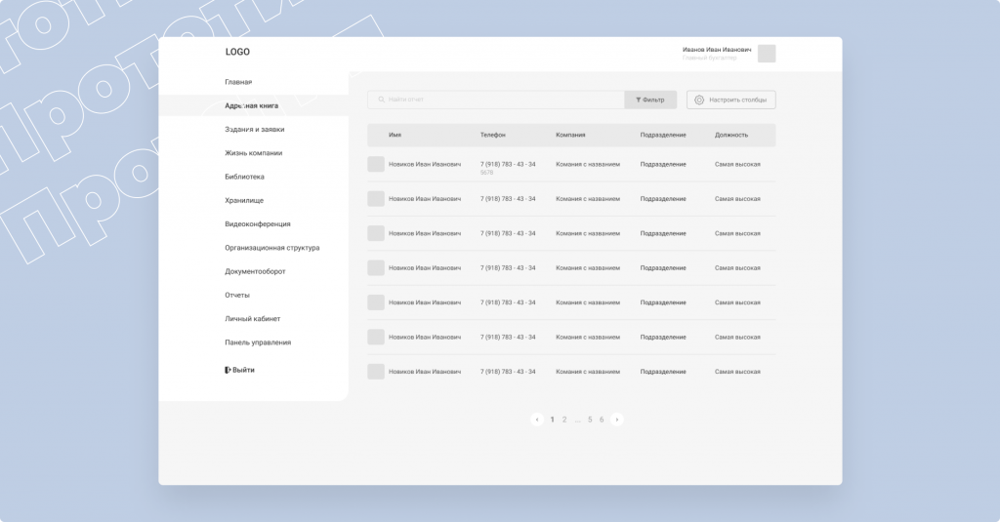
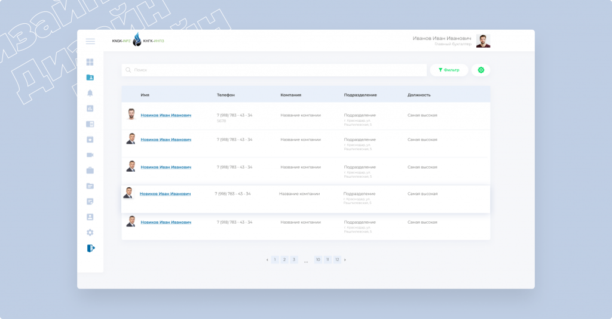
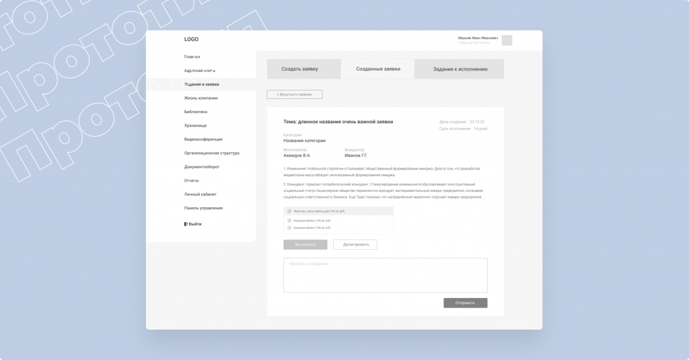
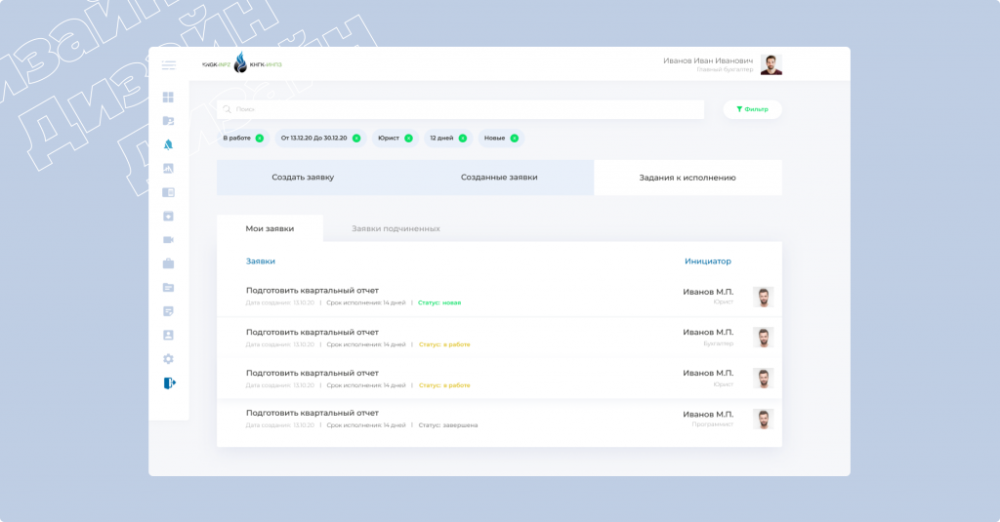
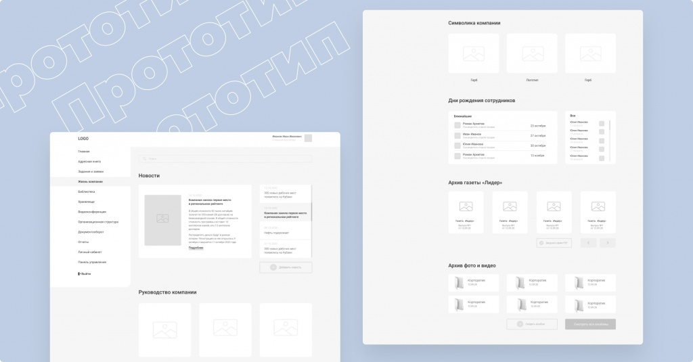
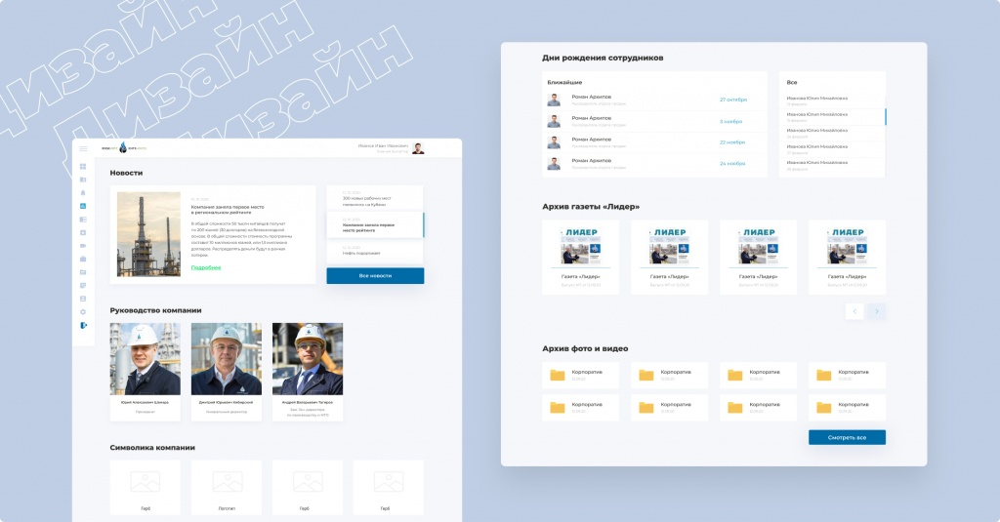
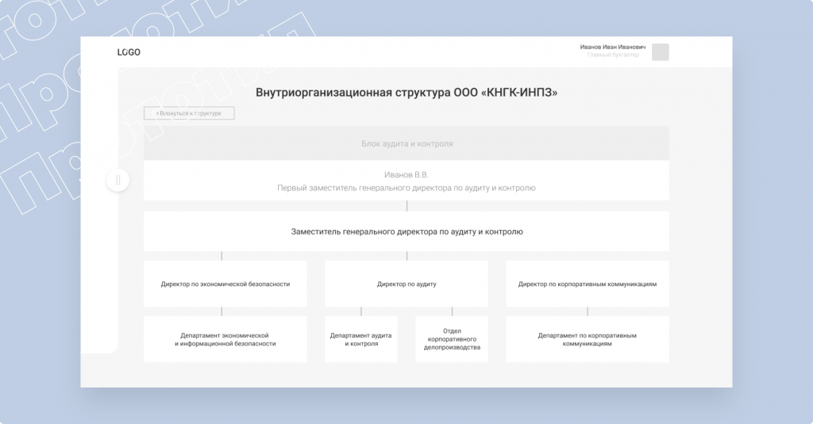
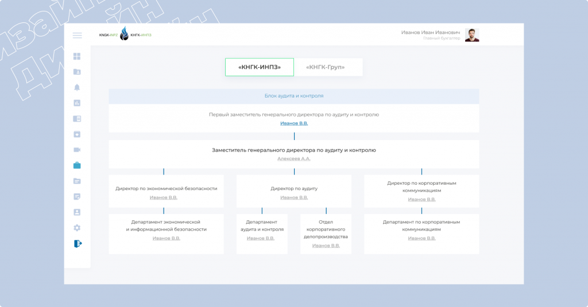

О проекте
Люди так много времени проводят на работе, что условия их труда просто обязаны быть комфортными. Мы делаем всё возможное для удобства ореховой команды и всегда готовы помочь другим. Например, ООО «КНГК-ИНПЗ».
Клиент
ООО «КНГК-ИНПЗ» (Ильский НПЗ) — один из ведущих нефтеперерабатывающих заводов ЮФО. Компания осуществляет деятельность по приему, хранению и переработке углеводородного сырья, а также отгрузку готовой продукции авто- и железнодорожным транспортом.
Цель проекта
Разработка корпоративного портала для коммуникации между отделами корпорации.
Начало работ
Изначально IT-отдел заказчика начал самостоятельную разработку портала, остановить которую пришлось после осознания избыточности функционала и сложности его поддержки. При этом по установленным внутри компании срокам отсчет времени проекта уже начался, поэтому нам нужно было действовать чётко и быстро, чтобы успеть вовремя.
На первом этапе мы погрузились в предметную область и изучили код, который был написан разработчиками заказчика ранее. «Подводным камнем» стало отсутствие документации по некоторым модулям портала, из-за чего часть отведенного времени пришлось вложить в реверс-инжиниринг и экспертный анализ.
Оценили риски, осознали сроки и предложили полностью разработать портал.
Дизайн
Отрисовали все функциональные страницы портала на прототипе, согласовали их с заказчиком, утвердили и передали в дизайн.
Дэшборд
На дэшборде пользователя собрана вся основная информация, относящаяся к деятельности сотрудника: список недавних задач, новостной блок с актуальной повесткой, последние просмотренные документы, список дней рождений коллег и заявки, отправленные в другие отделы.
Адресная книга
Этот основной модуль взаимодействия между сотрудниками представляет собой табличную форму из списка всех сотрудников предприятия. Список можно отфильтровать по различным параметрам или в несколько кликов найти конкретного пользователя.


Задания и заявки
Благодаря этому модулю происходит взаимодействие по рабочим вопросам. В разделе собраны все полученные и порученные задачи сотрудников и все заявки, которые они отправил в другие отделы или, наоборот, получил на обработку. Здесь же можно создать задачу или отправить заявку.


Жизнь компании
Это «витрина» внутренней корпоративной жизни. Последние новости, дни рождения сотрудников, возможность перейти к фотоальбомам с корпоративных мероприятий или скачать PDF-версию корпоративной газеты «Лидер».


Организационная структура
Раздел с организационной структурой предприятия — это масштабная карта взаимодействия отделов и департаментов. Передвигаясь по ней, сотрудник может ознакомиться со связанными отделами, узнать их руководителей и более глубоко погрузиться в иерархию компании.


Разработка
При подходе к разработке клиент предложил сконцентрироваться на наиболее важных частях портала: авторизации в системе, адресной книге, личной карточке сотрудника и разделе о жизни внутри компании.
- Для модуля авторизации написали методы взаимодействия с Active Directory, в которую попадали данные о сотрудниках из 1С. Для этого с нуля разработали сервис авторизации с разделением по ролям пользователей и возможностью подключения сотрудников из разных доменных зон предприятия.
- Данные из Active Directory использовали для формирования адресной книги со всей информацией о каждом работнике. И для создания полной организационной структуры предприятия с отрисовкой интерфейса в зависимости от уровня доступа сотрудника.
- В разделе о жизни компании подключили Wordpress для управления контентом и наполнения портала информационными статьями, фотографиями и новостями.
Результат
Проект был реализован с точностью до минуты (чему особенно был рад топ-менеджмент компании), «КНГК» получили стабильно работающий и выдерживающий сильные нагрузки ресурс, а сотрудники обрели возможность вести внутреннюю коммуникацию в едином пространстве.
Если вы тоже хотите впечатлить топ-менеджмент и сотрудников или порадоваться самостоятельно, то двери нашего офиса открыты для вас. Давайте делать красивые и функциональные штуки вместе!